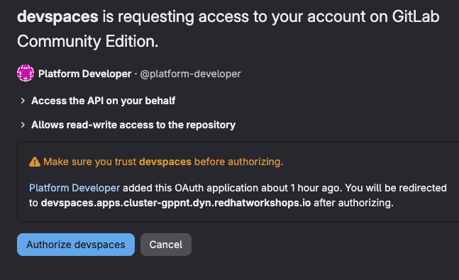
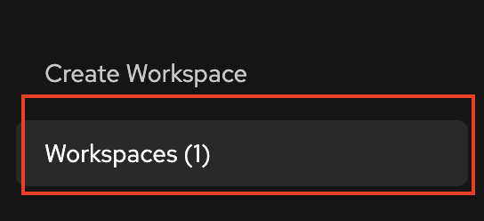

Lab 10: Create and Configure a Dev Spaces Workspace
In this lab, you’ll create a Red Hat Dev Spaces workspace for the ETX App Base application, configure it with a custom Devfile, and verify that it is ready for cloud-native application development.
The Devfile defines the development environment, including the container image, development commands, environment variables, and IDE extensions. By storing the Devfile in the Git repository, every developer can create an identical workspace with a single click.
By the end of this lab, you will have:
-
Created a Red Hat Dev Spaces workspace
-
Configured Git for source control
-
Created and committed a
devfile.yaml -
Recreated the workspace using the Devfile
-
Verified the workspace configuration and connectivity to PostgreSQL and Kafka
Access the Dev Spaces Dashboard
Begin by accessing the Red Hat Dev Spaces dashboard.
Retrieve the dashboard URL.
oc get checluster devspaces \
-n openshift-devspaces \
-o jsonpath='{.status.cheURL}{"\n"}'Open the URL in your web browser and sign in using your OpenShift credentials.
| Red Hat Dev Spaces uses OpenShift OAuth for authentication. No additional login configuration is required. |
Create an Initial Workspace
The etx_app_base_app repository does not yet contain a Devfile. In this section, you’ll create a temporary workspace that you’ll use to add the devfile.yaml to the repository.
-
From the Dev Spaces dashboard, click Create Workspace.
-
Select Import from Git.
Retrieve the GitLab URL.
GITLAB_URL="https://$(oc get route \
-n gitlab \
-l app=webservice \
-o jsonpath='{.items[0].spec.host}')"
echo "${GITLAB_URL}"Paste the following repository URL into Dev Spaces.
{GITLAB_URL}/software-factory/etx_app_base_app.git
-
Click Create & Open.
-
If prompted, authorize GitLab access using OAuth.

Because the repository does not yet contain a devfile.yaml, Dev Spaces automatically creates the workspace using the Universal Developer Image (UDI).
|
Configure Git
After the workspace opens, configure your Git identity.
Open a terminal by selecting .

Run the following commands.
git config --global user.email "platform-developer@example.com"
git config --global user.name "Platform Developer"Create a Devfile
The Devfile defines the development environment for the application, including the container image, development commands, environment variables, and IDE configuration.
Create the devfile.yaml file using the following command.
cat > devfile.yaml <<'EOF'
schemaVersion: 2.2.0
metadata:
name: etx-app-base-app
components:
- name: development-tooling
container:
image: quay.io/devfile/universal-developer-image:ubi9-latest
env:
- name: QUARKUS_HTTP_HOST
value: "0.0.0.0"
- name: MAVEN_OPTS
value: "-Dmaven.repo.local=/home/user/.m2/repository"
# External service connections
- name: POSTGRESQL_HOST
value: "parasol-db.etx-app-dev.svc.cluster.local"
- name: POSTGRESQL_DATABASE
value: "parasol"
- name: POSTGRESQL_USER
value: "parasol"
- name: POSTGRESQL_PASSWORD
value: "parasol"
- name: KAFKA_BOOTSTRAP_SERVERS
value: "parasol-kafka-kafka-bootstrap.etx-app-dev.svc.cluster.local:9092"
memoryLimit: 5Gi
cpuLimit: 2500m
volumeMounts:
- name: m2
path: /home/user/.m2
endpoints:
- name: quarkus-dev
targetPort: 8080
exposure: public
protocol: https
- name: debug
targetPort: 5005
exposure: none
- name: m2
volume:
size: 1G
commands:
- id: package
exec:
label: "1. Package the application"
component: development-tooling
commandLine: "./mvnw package"
group:
kind: build
isDefault: true
- id: start-dev
exec:
label: "2. Start Development mode (Hot reload + debug)"
component: development-tooling
commandLine: "./mvnw compile quarkus:dev"
group:
kind: run
isDefault: true
- id: init-continue
exec:
label: "Initialize Continue config"
component: development-tooling
workingDir: /home/user
commandLine: |
mkdir -p /home/user/.continue
cat > /home/user/.continue/config.yaml << EOF
name: Continue Config
version: 0.0.1
models:
- name: qwen3-14b
provider: vllm
model: qwen3-14b
apiKey: ${LLM_API_KEY}
apiBase: ${LLM_BASE_URL}
roles:
- chat
EOF
group:
kind: build
events:
postStart:
- init-continue
EOFVerify that the file was created successfully.
ls -la devfile.yaml
head -20 devfile.yamlCommit the Devfile
Commit the Devfile to a feature branch so it can be used when creating a new workspace.
git checkout -b feature/add-devfile
git add devfile.yaml
git commit -m "feat: add devfile for Dev Spaces configuration"
git push origin feature/add-devfileRecreate the Workspace Using the Devfile
Now that the repository contains a Devfile, recreate the workspace so Dev Spaces can automatically configure the development environment.
Delete the Temporary Workspace
-
Return to the Dev Spaces dashboard.
-
Locate your workspace.

-
Open the options menu and select Delete Workspace.

-
Confirm the deletion.
Create a Workspace from the Devfile
You can create a workspace using either a direct URL or the Dev Spaces web interface.
-
Direct URL (Recommended)
-
Manual UI
Use a direct URL to create a workspace from a specific branch.
Get the required URLs:
# Get Dev Spaces URL
DEVSPACES_URL="https://$(oc get checluster devspaces -n openshift-devspaces -o jsonpath='{.status.cheURL}' | sed 's|https://||')"
# Get GitLab URL
GITLAB_URL="https://$(oc get route -n gitlab -l app=webservice -o jsonpath='{.items[0].spec.host}')"
# Construct the direct workspace URL
echo "${DEVSPACES_URL}#${GITLAB_URL}/software-factory/etx_app_base_app/-/tree/feature/add-devfile"Open the generated URL in your browser. Dev Spaces will:
-
Automatically import the repository from the feature/add-devfile branch
-
Detect and use the devfile.yaml
-
Configure the workspace with all environment variables and settings
This skips the manual "Create Workspace → Import from Git" flow.
Create a workspace through the Dev Spaces dashboard.
-
Click Create Workspace
-
Select Import from Git
-
Paste the repository URL (use the actual GitLab URL from your cluster):
{gitlab_url}/software-factory/etx_app_base_app/-/tree/feature/add-devfile -
Click Create & Open
When the workspace starts, Dev Spaces detects the devfile.yaml and automatically configures the development environment.
The workspace includes:
-
PostgreSQL connection settings
-
Kafka connection settings
-
Persistent Maven repository cache
-
Quarkus development commands
-
Automatic AI assistant initialization
| The direct workspace URL can be bookmarked and reused for future development sessions. |
Verify the Workspace
After the workspace opens, verify that it has been configured correctly.
Verify the Repository
Open a terminal.
git branch --show-current
git log --oneline -3
ls -la devfile.yamlVerify that:
-
the current branch is
feature/add-devfile -
devfile.yamlexists in the repository root
Verify Environment Variables
Confirm that the Devfile environment variables were applied.
echo "POSTGRESQL_HOST: $POSTGRESQL_HOST"
echo "POSTGRESQL_DATABASE: $POSTGRESQL_DATABASE"
echo "POSTGRESQL_USER: $POSTGRESQL_USER"
echo "KAFKA_BOOTSTRAP_SERVERS: $KAFKA_BOOTSTRAP_SERVERS"The output should display the PostgreSQL and Kafka connection information.
If the environment variables are empty, recreate the workspace after confirming that the devfile.yaml was committed and pushed successfully.
|
Verify Service Connectivity
Verify connectivity to the PostgreSQL service.
timeout 3 bash -c "echo > /dev/tcp/$POSTGRESQL_HOST/5432" \
&& echo "PostgreSQL connection successful" \
|| echo "PostgreSQL connection failed"Verify that the command reports:
PostgreSQL connection successful
| If connectivity fails, verify that you successfully completed the previous labs where PostgreSQL and Kafka were deployed. |